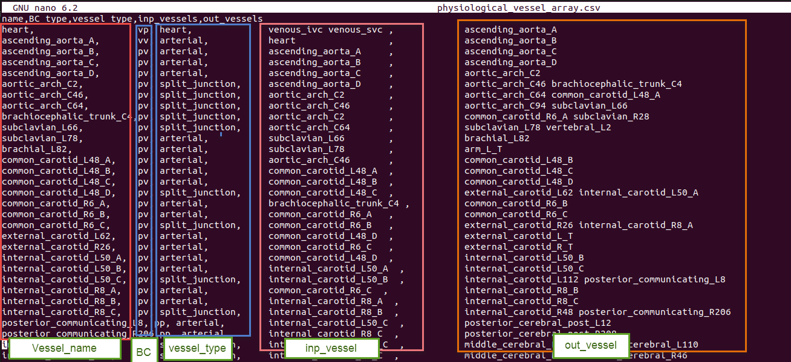
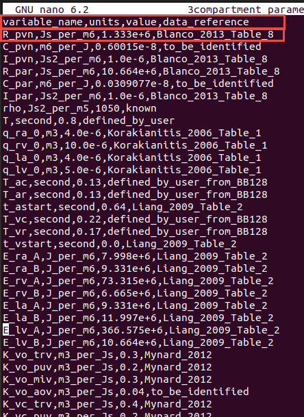
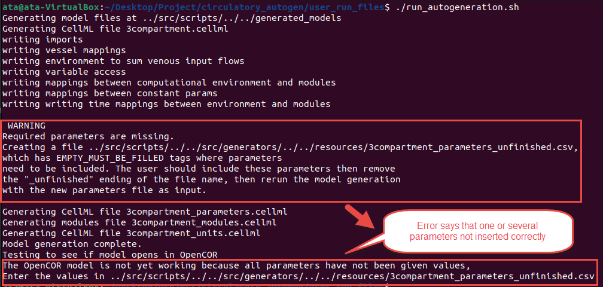
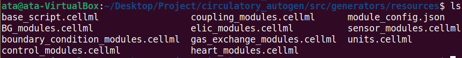
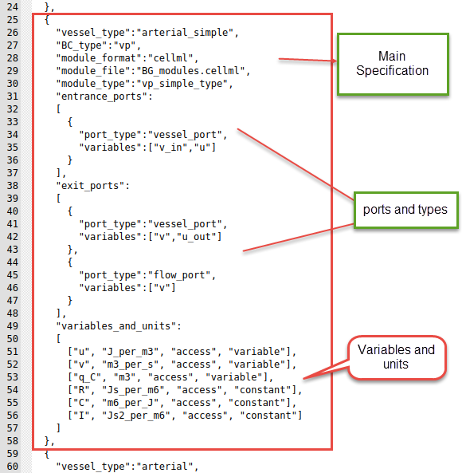
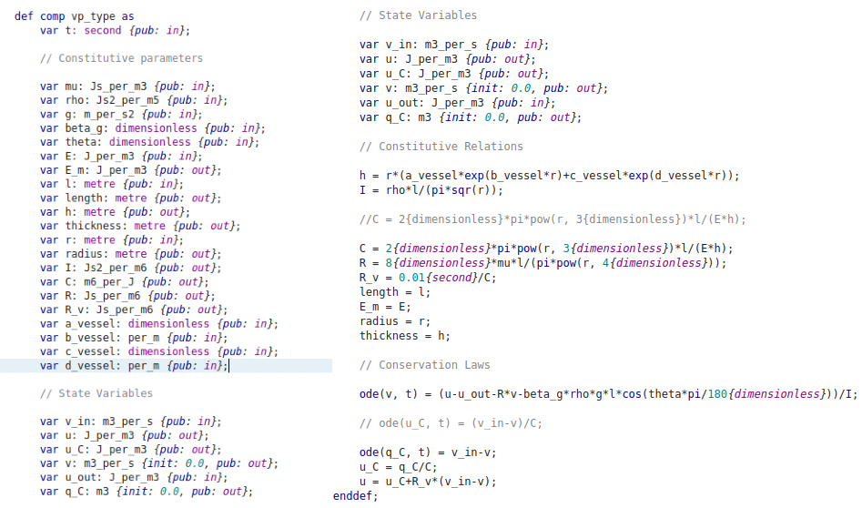
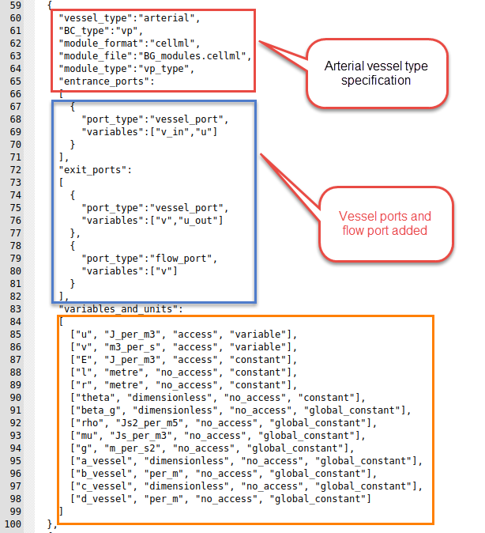

Designing a model
This section describes how to design a model to be run in Circulatory Autogen. There are two sub sections included in this guide as follows.
Creating a new model
This software is designed so the user can easily make their own modules and couple them with existing modules. The steps are as follows.
-
Either choose an existing
[module_category]_modules.cellmlfile to write your module, or if it is a new category of module, create a[module_category]_modules.cellmlfile in[project_dir]/module_config_user/. -
Put your cellml model into the
[module_category]_modules.cellmlfile. -
Create a corresponding module configuration entry into
[module_category]_config.jsonwithin[project_dir]/module_config_user/. These module declarations detail the variables that can be accessed, the constants that must be defined and the available ports of the module. -
When possible, use units defined in
[project_dir]/src/generators/resources/units.cellml. If you need to define new units, define them in[project_dir]/module_config_user/user_units.cellml -
Include your new module into a
[CA_user_dir]/[file_prefix]_vessel_array.csvfile.Note
Modules that are connected as each others inputs and outputs will be coupled together with any ports with corresponding name.
For an example, if VesselOne has an exit_port 'vessel_port' and VesselTwo has an entrance_port 'vessel_port', they will be coupled with the variables declared in their corresponding 'vessel_port'. You must be careful when making a new module, that the modules it couples to only has matching port types for the ones that are necessary for coupling.
Additionally, if a module has a general_port [port_name], it will couple to any entrance, exit, or general port in a connected vessel with the port name [port_name].
Standard usage: entrance and exit ports are used for spatial connections (e.g. exit to entrance of a parent and daughter vessel), whereas general ports are used for non-spatial connections (e.g a port for a material property of a whole vessel)
-
Define model constants in a
[CA_user_dir]/[file_prefix]_parameters.csvfile. OR run the autogeneration, which will call an error and create a[CA_user_dir]/[file_prefix]_parameters_unfinished.csv. See model generation and simulation
The following sections include more details on creating the above required files.
Creating vessel_array and parameter files
This section discusses creating a vessel_array and parameters files to build a new desired model.
One standard vessel array file contains five important columns as elaborated in the table below.
- vessel_name is the name of a common organ or part of the cardiovascular system.
- BC_type is the type of the boundary condition for the vessel's input and output or more generally, the subtype of the module.
- vessel_type can be defined as the desired module which exists in the
[project_dir]/src/generators/resources/module_config.jsonor one of the[project_dir]/module_config_user/[model_category]_config.jsonfile. - inp_vessel is the input of each part.
- out_vessel is the output of each part.
Some examples of possible inputs
| Column name | Possible inputs |
|---|---|
| vessel_name | User defined, but it is better to use common names like 'heart', 'pvn', 'par', etc. |
| BC_type | 'vv', 'vp', 'pv', 'pp', 'pp_wCont', 'pp_wLocal', 'nn' (linked to BC_type in the module_config.json file) |
| vessel_type | 'heart', 'arterial', 'arterial_simple', 'venous', 'terminal', 'split_junction', 'merge_junction', '2in2out_junction', 'gas_transport_simple', 'pulomonary_GE', 'baroreceptor', 'chemoreceptor' (linked to vessel_type in the module_config.json file) |
| inp_vessels | name of the input vessels, which is one (or more) of the vessel_name entries in the other rows |
| out_vessel | name of the output vessels, which is one (or more) of the vessel_name entries in other rows |
Below figure is an example of a vessel_array file.

Every row of the vessel array file represents a specific part or module in the defined system. Therefore, each module needs several parameters for modeling and generating a CellML file.
These parameters should be inserted in the parameters file: [resources_dir]/[file_prefix]_parameters.csv.
This file has the structure as shown below.
| Column Name | Description |
|---|---|
| variable_name | Parameter name |
| units | Unit in the defined units in CellML's unit file |
| value | Value of parameter |
| data_reference | Reference of the parameter value. Typically in [last_name][date][first_word_of_paper] format for papers. |
The following is an example of a parameter file.

Note
If you forget to add or insert any needed parameter in the file when you run the code, it shows you this message at the end:

At this time, you should open the [resources_dir]/[file_prefix]_parameters_unfinished.csv, which will include the parameters which were not inserted in the file with EMPTY_MUST_BE_FILLED value and data_reference entries. You should add the parameter value and reference, then copy the line to the original [file_prefix].csv file. Or you can add the value in the _unfinished.csv file then remove the last part of the file's name (“_unfinished”) (overwriting the original) and rerun the code with the correctly set parameters.
Modules and definition of a new module
In the [CA_dir]/src/generators/resources directory, there are several CellML files which contain the modules that can be coupled together in your model. The module_config.json file defines the connection ports and variables of each cellml module. Additionally the cellml and .json files in module_config.user contains more available modules that have not yet been accepted into the source code.

If you want to create a new module, you can create or add to a module_config_user/[module_category]_modules.cellml and link to the file where the cellml file is contained, e.g. tutorial_modules.cellml or another cellml file in [CA_dir]/module_config_user/ or [CA_dir]/src/generators/resources/.
As shown in the below figure, there are three different parts for each module. The primary specification includes vessel_type, boundary condition type, and module_file, then the ports and their types, and finally, variables and constants.

Following is one of the modules in the BG_modules file. The main body of a specific module contains variables declaration, constitutive parameters, and state variables. Then, the constitutive relations and eventually, ODE equations.

Example of creating a new module
This section shows a simple example to create a new module
We want to define a new vessel type with the name of "arterial" with boundary condition type "vp". Additionally, we want to use the "vp_type" module, whose cellml code is shown in the above figure. Also, the module is located in the BG_modules.cellml file.
Vessel_type, BC_type, module_format, module_file location, module_type and other related information are added to the module_config.json file, as shown below. We can now use this vessel_type in the vessel_array file in [resources_dir] to add the module with specified inputs, outputs and parameters. In the ports, you should add the "vessel_port" type for connecting to the other parts. Additionally, each module can be used in many vessel_types.

The entries in the module_config.json file are detailed as follows:
- vessel_type: This will be the "vessel_type" entry in the vessel_array file
- BC_type: This will be the "BC_type" entry in the vessel_array file
- module_format: Currently only cellml is supported but in the future, cpp modules and others will be allowed.
- module_file: The file within
[CA_dir]/src/generators/resources/or[CA_dir]/module_config_user/that contains the cellml module that this config entry links to. - module_type: The name of the module/computational_environment within the module cellml file.
- entrance_ports: Specification of the port types that this module can take if it is connected as an "out_vessel" to another module. If a port_type matches to the port_type of a exit_port in a module coupled as an input, then the port_types variables, e.g. [v_in, u] get mapped to the variables in the coupled modules exit port e.g. [v, u_out].
- exit_ports: Specification of the port types that this module can take if it is connected as an "inp_vessel" to another module.
- general_ports: Specification of the port types that this module can take if it is connected as any type of connection to another module. Port entries are:
- port_types: The name of the type of port. If two vessels are connected vessel_a to vessel_b, and vessel_a has an exit_port with the same port_type as an entrance_port of vessel_b, then a connection will be made.
- variables: These are the variables within the module that will be connected to the variables in the corresponding port of the connected vessel/module.
Note
If you want a port variable to be able to couple to multiple other modules, you must set
"multi_port": "True"as an entry within the entrance, exit, or general port. -
variables_and_units: This specifies all of the constants and the accesible variables of the cellml module. The entries are:
- [0] variable name: corresponding to the name in the cellml file
- [1] variable unit: corresponsing to the unit specification in
units.cellml - [2] access or no_access: whether the variable can be accessed within the cellml simulation. This should always be "access" for accessibility, unless you want to decrease memory usage.
- [3] parameter type: can be constant, global_constant, variable, or boundary_condition.
- If parameter_type is boundary_condition it will be set to a variable accesses from another module if the corresponding port is connected. However, if the
corresponding port is not connected, the boundary_condition will be set to a constant, and required to be set in the
[resources_dir]/[file_prefix]_parameters.csvfile
Note
All constants are required to be entered in the
[resources_dir]/[file_prefix]_parameters.csvfile with the following naming convention: [variable_name]_[vessel_name].All global_constants are required to be entered in the
[resources_dir]/[file_prefix]_parameters.csvfile as just [variable_name].
Converting an existing CellML model to run in Circulatory Autogen
Circulatory Autogen provides a script to convert an existing cellml model (with parameters hardcoded in the modules) to a format that can be used with Circulatory_Autogen, which is a format that defines parameters in a separate file so that they can be used in model calibration and specifies modules in a config file with ports for easy coupling of modules.).
You can find the script "generate_modules_files.py" at [CA_dir]/src/scripts.
Update the script to change the input_model variable to the path of your CellML model and output_dir variable to the directory where you need to create the resources files and the new [file_prefix]_user_inputs.yaml file.
This script generates the [file_prefix]_modules.cellml and module_config.json files in the module_config_user directory. [file_prefix]_parameters.csv and [file_prefix]_vessel_array.csv files are created in [output_dir]/resources and the [file_prefix]_user_inputs.yaml is created in [output_dir].
You only need to update the user_inputs.yaml file at the user_run_files directory to update user_inputs_path_override: to [output_dir]/[file_prefix]_user_inputs.yaml to run model autogeneration.
Note
You can update the file_prefix, vessel_name and the data_reference variables in the generate_modules_files.py at the src/scripts directory before running the script, so it will generate files with the defined variables.
Warning
You need to specify the variable name of time as the time_variable.
Variable component_name should be the name of the component for which you want to generate files.